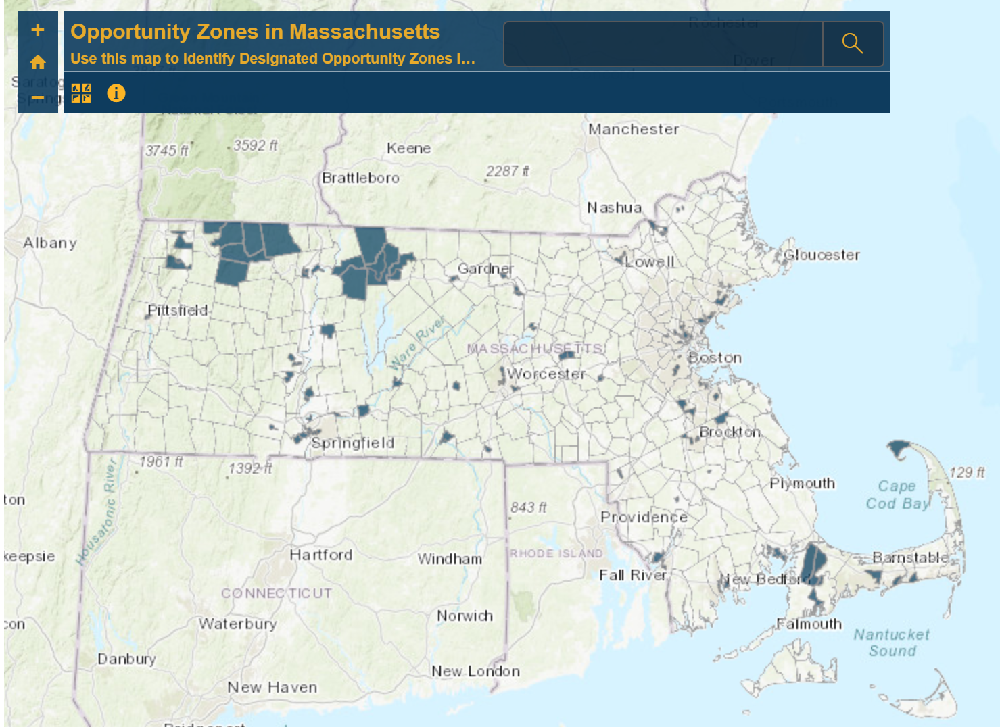

The Opportunity Zone Program was created as part of the U.S. Tax Cut and Jobs Act of 2017 to incentivize investment in low income communities. State governors can nominate up to 25% of their state’s low income census tracts to be deemed Opportunity Zones. Capital gains from investment in economic activities in Opportunity Zones are given favorable tax treatment through the program. The program presents an opportunity for both Opportunity Zone residents and private investors to benefit from these incentivized private investments..
In Massachusetts, the U.S. Treasury has designated 138 census tracts in 79 communities as Opportunity Zones. The map below displays the 138 Opportunity Zones in Massachusetts.
Some of the Massachusetts opportunity zones certified by the U.S. Department of the Treasury have left locals scratching their heads over why an incentive is needed to build. While low-income parts of Fall River, Springfield and New Bedford made the cut, so did neighborhoods in places like the tourist-heavy Provincetown as well as Alewife in West Cambridge, which developers are already building up as a life science relief valve to Kendall Square.